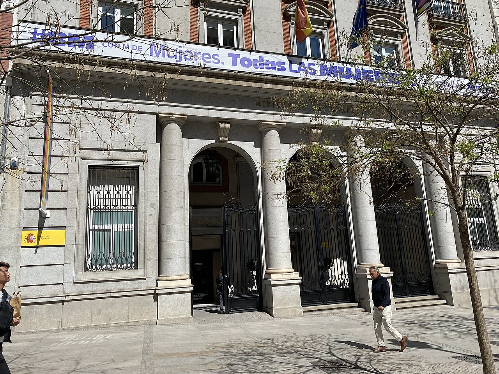

Spagna, possibile frode sui braccialetti anti-violenza: indaga la Procura UE
Una richiesta di documenti non è un'accusa e non ci sono indagati noti; ma proteggere le vittime è un compito di base dello Stato, e se soldi e servizio sono andati male qualcuno deve spiegarlo.
Redazione Contrappunto · aggiornato il 12.11.2026


Il 12 novembre 2026 la Procura europea (EPPO) ha annunciato di indagare in Spagna su una possibile frode con fondi dell'Unione europea destinati ai braccialetti elettronici per i casi di violenza di genere: i dispositivi che servono a far rispettare i divieti di avvicinamento imposti dai giudici agli aggressori e a dare l'allarme alla vittima. Gli agenti della Guardia Civil hanno chiesto documenti al ministero dell'Uguaglianza e alla Corte dei conti. La Procura europea non indica indagati, importi o portata dell'inchiesta, ma ha scritto di una «presunta frode». Non risulta alcuna accusa a una persona precisa: vale la presunzione d'innocenza.
Vedi di più: 5 parole spiegate, cosa si racconta
Cosa si raccontaEl País (centro-sinistra) scrive che la Procura europea indaga sul ministero e sulla Corte dei conti; ABC (destra) riporta il comunicato e nota che l'EPPO non dà informazioni su indagati e importi; La Vanguardia (centro) ricostruisce il contratto: novembre 2023, 42,6 milioni di euro, di cui 4,6 di fondi europei, per 22.800 dispositivi. Il ministero dice di non sapere cosa cerchi la Procura europea e che i fondi sono stati spesi bene; il Partito popolare (opposizione) promette un controllo di ogni euro dopo le elezioni. [El País] [ABC] [La Vanguardia]
- Procura europea (EPPO)
- Organismo indipendente dell'UE con sede a Lussemburgo: indaga, esercita l'azione penale e porta a giudizio i reati contro gli interessi finanziari dell'Unione, in particolare le frodi con fondi europei (El País).
- Braccialetti anti-violenza
- Dispositivi di controllo elettronico: l'aggressore porta un braccialetto, la vittima un terminale che segnala quando si avvicina. Dal 2023 il servizio è passato da Telefónica a Vodafone (per El País con Securitas; per La Vanguardia Securitas lavorava con il vecchio fornitore), e nel passaggio dei dati si sono avuti molti guasti (El País, La Vanguardia).
- Corte dei conti (Tribunal de Cuentas)
- L'organo spagnolo che controlla la spesa pubblica: ha fatto una verifica sul contratto dei braccialetti, pubblicata il 22 settembre 2026 (La Vanguardia).
- Fondi Next Generation
- Il piano di recupero europeo dopo la pandemia: i soldi vengono versati ai governi quando raggiungono gli obiettivi concordati. Bruxelles ha detto che avrebbe valutato i braccialetti nell'ultima richiesta di pagamento della Spagna, presentata a settembre (El País).
- UCO
- L'Unità centrale operativa della Guardia Civil, il corpo di polizia militare spagnolo, che ha affiancato la Procura europea (ABC).
- La Procura europea, con la Guardia Civil, indaga a Madrid su una possibile frode con fondi UE per i braccialetti anti-violenza: ha chiesto documenti al ministero dell'Uguaglianza e alla Corte dei conti (El País, ABC, La Vanguardia).
- Il contratto è del novembre 2023: 42,6 milioni di euro, di cui 4,6 milioni da fondi europei, per 22.800 dispositivi; l'inchiesta è del 2025 (El País, La Vanguardia).
- Indagati e importi non sono noti. Il ministero dice che i fondi sono stati spesi bene (El País).
Le tre testate partono dallo stesso comunicato, ma lo leggono in modo diverso. El País scrive nel testo che la Procura indaga sul ministero e sulla Corte dei conti; ABC ricorda che la Procura europea non indica indagati né importi; La Vanguardia dà i numeri: solo 4,6 milioni su 42,6 sono soldi UE. Il racconto regge sul fatto e non sul sospetto: una richiesta di documenti non è un'accusa, e il ministero ha già ricevuto richieste da marzo. Ma il fondo è serio. Proteggere una donna minacciata è il tipo di cosa che lo Stato deve fare bene, e i registri spariti hanno fatto cadere dei processi. Se i fondi UE sono stati usati male, deve dirlo un giudice, e chi decide risponde dei risultati, qualunque governo sia. [1] [2] [3]
La verifica punto per punto3 passaggi, 3 fonti
Qui sotto ogni cosa scritta sopra, una per una, con le fonti. Confermato: lo dice un documento originale o più fonti lette. Plausibile: lo riportano fonti serie, ma non abbiamo letto l'originale. Discordante: le fonti danno numeri diversi, e diciamo quali. Ipotesi e Opinione sono il nostro ragionamento, separato dai fatti.
L'indagine
Il 12 novembre 2026 la Procura europea ha comunicato di svolgere misure di indagine nelle sedi del ministero dell'Uguaglianza e della Corte dei conti a Madrid, nell'ambito di una «presunta frode» sui fondi UE destinati ai braccialetti elettronici (ABC, La Vanguardia, El País). L'ufficio di Madrid dirige le attività, con il sostegno dell'UCO della Guardia Civil (ABC). L'indagine è iniziata nel 2025; secondo fonti del ministero, da marzo la Procura europea aveva già chiesto documenti, ma il ministero dice di non sapere che cosa cerchi (El País). La Procura europea non indica indagati, importi o portata (ABC). Secondo La Vanguardia, che cita fonti del ministero e non la Procura, l'indagine verte sul perché i braccialetti siano stati comprati per la prima volta con fondi Next Generation.
Il contratto e le falle
Il contratto è del novembre 2023, durante il mandato della ministra Irene Montero (Unidas Podemos) (El País); che l'abbia firmato lo dicono soltanto fonti del ministero, oggi guidato da Ana Redondo e non da Montero, quindi parte in causa nel ricostruire chi decise (La Vanguardia). Fu assegnato a Vodafone (con Securitas, per El País) per 42,6 milioni di euro: 4,6 milioni erano fondi europei e servirono per 22.800 dispositivi (El País, La Vanguardia). Nel passaggio da Telefónica furono persi dati di localizzazione degli aggressori; la Procura generale dello Stato lo scrisse nella relazione 2024, e senza quelle prove alcuni aggressori furono assolti o non processati (La Vanguardia). El País scrive che la Corte dei conti a settembre ha confermato «graves deficiencias»; per fonti del ministero, citate da La Vanguardia, il parere della Corte fu favorevole. La ministra Ana Redondo dice che i fondi sono stati spesi correttamente e che il dibattito è stato «trufado de bulos y de mentiras»; il Partito popolare promette di verificare «hasta el último euro» dopo le elezioni (El País). Il ministero dice che oltre 4.000 donne portano dispositivi «que salvan vidas» (La Vanguardia).
Il nostro punto
Una richiesta di documenti non è una condanna, e non ci sono indagati noti: aspettiamo la Procura europea, senza gogna. Ma sono soldi UE, cioè anche nostri, e il servizio riguarda donne minacciate: uno Stato che fa poche cose deve farle bene, e qui i dati sono spariti e dei processi sono caduti. Chi decide risponde dei risultati, a destra e a sinistra, e la Procura europea serve proprio a questo: controllare dove i governi nazionali si guardano da soli.
Fonti3, tutte con il link
- La Fiscalía Europea investiga un posible fraude en las pulseras antimaltrato con fondos comunitarios (12 novembre 2026; archivio d27a89d90df80) (El País) · consultata il 12.11.2026
- La Fiscalía Europea investiga un presunto fraude con fondos de la UE en las pulseras antimaltrato en España (12 novembre 2026; archivio d71535ddfafa2) (ABC) · consultata il 12.11.2026
- La Fiscalía Europea lanza una operación por fraude por las pulseras antimaltrato (12 novembre 2026; archivio da2a67f1f5b08) (La Vanguardia) · consultata il 12.11.2026